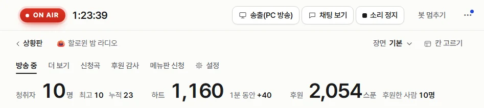
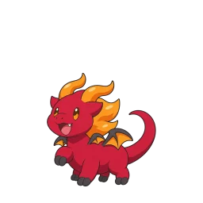
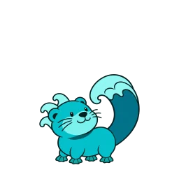
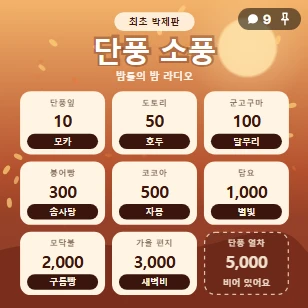
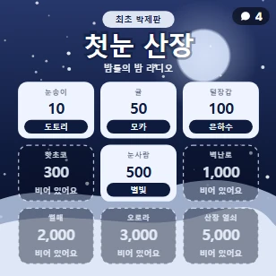
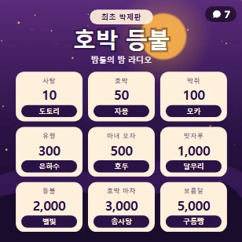

추억앨범만
나만의 추억앨범 사이트
3,000원 / 월
1년 결제 시 30,000원
신청하기스푼 DJ를 위한 PC 채팅 봇
스푼 방송에 매니저로 들어와 입장 인사, 후원 감사, 채팅 게임을 대신해 주는 Windows PC 프로그램이에요.
먼치킨은 Windows PC 프로그램이에요
PC에서 먼치킨.com을 열어 받아 주세요.
먼치킨 0.23.7 · Windows 10·11 (64비트) · 116MB · 무료 베타

DJ가 정해 둔 인사말 예시예요. 인사말은 DJ가 직접 적어요.
PC에 켜 두면 스푼 방송 채팅에 들어와 이런 일을 대신해요.
노래하거나 사연을 읽는 사이 들어온 청취자도 이름을 불러 인사해요.
후원에는 고맙다고 말해요.
초성퀴즈와 업다운은 DJ나 매니저가 시작하고, 가위바위보는 누구나 해요.
청취자는 DJ가 고른 보상을 받아요.
채팅에 묻히기 쉬운 신청곡을 순서대로 모아 둬요.
아직 고맙다고 못 한 후원자는 감사 목록에 남아요.
채팅을 거슬러 올라가지 않아도 지금 청취자, 하트, 후원이 한 화면에 보여요.
이름을 누르면 청취자 카드가 열려요.

12월 1일 0시 시작12월 31일까지
12월 한 달 동안 먼치킨을 쓰는 방송들이 대륙 지도 한 장을 나눠 가져요.
청취자 몬스터로 보스를 잡고, 다른 방과 겨뤄 땅을 넓혀요.
키우기.com 보스전 화면이에요. 이름은 지어낸 예시예요.
방송을 켜고 30분 뒤부터 30분마다 나와요.
청취자가 1분 안에 !참전을 치면 대표 몬스터가 알아서 싸워요.
DJ의 키우기.com 페이지가 있으면 생중계 주소가 채팅에 올라와요.
DJ PC의 먼치킨 화면에서도 싸우는 장면을 봐요.

먼치 방청취자와 DJ가 한 팀
쿠키 방지금 방송 중인 다른 방이긴 방은 진 방 땅의 일부를 식민지로 가져가요
!응원 100으로 냥을 걸어요두 방 모두 먼치킨을 켜고 신청한 채 방송 중이어야 해요.
방 이름은 지어낸 예시예요.
키우기.com 영토 지도 예시예요. 이름은 지어낸 거예요.
참가는 [참가] 한 번이면 돼요.
먼치킨을 켜고 키우기 화면에서 [참가]를 누르면 지도에 우리 방 기지가 생겨요.
내 박제판, 최초 박제판, 방송 추억이 모이는 나만의 작은 사이트예요.
내이름.먼치킨.com
최초 박제판에 이름이 적히면 저절로 올라가요.
청취자는 하트와 댓글, 답글로 마음을 남겨요.
밤톨.먼치킨.com


첫 번째 함께한 순간최초 박제판
오늘도 고마워요방송 추억
별빛처럼 반짝인 우리내 박제판지어낸 이름과 내용으로 만든 예시예요.
사업자 등록, 통신판매업 신고, 현금영수증, 스푼 공식 API.
먼치킨은 전부 돼요.

먼치킨은 스푼(Spoon)이 만든 프로그램이 아니며, 스푼과 제휴 관계가 없는 독립 서비스예요.
2026년 12월 31일까지는 무료예요.
2027년 1월 1일부터 유료예요.
먼치킨 송출은 먼치킨 이용권의 무료 덤이에요.
다른 봇 석 달 쓸 돈이면, 먼치킨은 1년을 함께해요.월 1만 원 봇 3개월 = 30,000원먼치킨 1년 = 30,000원
Windows PC에 먼치킨을 설치하고 먼치킨 계정으로 로그인해요.
스푼 DJ 계정으로 연결해 먼치킨이 내 방송을 돕도록 허용해요.
허용은 스푼 화면에서 눌러요. 스푼 비밀번호는 먼치킨에 적지 않아요.
먼치킨이 제대로 일하려면 꼭 매니저여야 해요.
매니저가 아니면 입장 인사가 늦거나 빠지고, 팔로우 감사는 나가지 않아요.
방송이 끝나면 고정 매니저로 두세요.
먼치킨.com의 받기 단추로 받은 파일만 이렇게 열어 주세요.
파일 이름은 Munchkin-Setup으로 시작해요.
다른 곳에서 받은 파일은 열지 마세요.
PC에서 받을 때 보는 그림 안내예요. 제목을 누르면 펼쳐져요.
받기 단추를 누르면 엣지 오른쪽 위에 다운로드 창이 떠요.
창이 사라졌다면 키보드에서 Ctrl + J를 누르면 다시 열려요.
파일 옆 "···"(더 보기)을 눌러요휴지통 단추는 누르지 마세요.
파일이 지워져요.
메뉴에서 "유지"를 눌러요"파일을 남겨 둔다"는 뜻이에요.
Microsoft Defender SmartScreen은 이 파일이 안전한지 확인할 수 없습니다.
창 아래 "더 보기"를 눌러요파란 "삭제" 단추는 누르지 마세요.
"그래도 계속"을 눌러요이제 파일이 PC에 저장돼요.
"파일 열기"를 눌러요다운로드 폴더에서 파일을 두 번 눌러도 돼요.
다음은 아래 윈도우 파란 창이에요.
파일을 열면 윈도우가 파란 창을 한 번 더 띄울 수 있어요.
크롬으로 받았을 때도 같아요.
Microsoft Defender SmartScreen에서 인식할 수 없는 앱의 시작을 차단했습니다. 이 앱을 실행하면 PC가 위험에 노출될 수 있습니다.
글 아래 "추가 정보"를 눌러요처음에는 "실행" 단추가 안 보여요.
"추가 정보"를 눌러야 나와요.
"실행"을 누르면 설치가 이어져요"알 수 없는 게시자"는 서명이 없다는 뜻이에요.
앱 이름이 Munchkin-Setup인지만 확인해 주세요.
설치가 끝나면 먼치킨을 켜서 "스푼 연결"을 눌러 주세요.
이 창들은 처음 한 번만 나와요.
새 버전은 먼치킨이 켜질 때 저절로 업데이트돼요.
오른쪽 위 다운로드 단추를 누르면 받은 파일 목록이 보여요.
먼치킨 파일 옆에 경고가 붙어 있으면, 그 파일을 눌러 받기를 이어 가는 단추를 눌러 주세요.
그다음은 위 "설치 파일을 열 때"와 같아요.
그림은 실제 창을 간단히 옮겨 그린 거예요.
엣지와 윈도우 버전에 따라 글자나 단추 모양이 조금 다를 수 있어요.
먼치킨은 2026년 12월 31일까지 무료예요.
먼치킨만 쓰는 분은 신청하지 않아도 돼요.
2027년 1월 1일부터 유료예요.
이용권은 지금 이용권 칸에서 신청할 수 있고, 그 전에 결제한 이용권은 1월 1일부터 자동으로 쓰여요.
계좌이체는 지금 되고, 카드 결제는 KG이니시스 심사가 끝나면 열려요.
네. Windows PC에 먼치킨을 켜 두면 휴대폰 방송에서도 인사, 게임, 통장이 움직여요.
효과음과 TTS는 PC에서 나와요.
먼치킨은 DJ의 PC에서 움직이니, 방송할 때 PC와 먼치킨을 함께 켜 두세요.
네. 먼치킨.com/album에서 누구나 신청할 수 있어요.
결제가 확인되면 앨범이 바로 만들어지고, 이용 기간은 1월 1일부터 시작해요.
한이준 추억앨범(새 창)에서 어떤 모습인지 먼저 만나 보세요.
먼치킨을 켜면 새 버전으로 저절로 업데이트해요.
공지와 자세한 업데이트 소식은 먼치킨 디스코드(새 창)에서 만나요.
먼치킨은 Windows PC 프로그램이에요
이 기기에는 설치할 수 없어요.
PC에서 먼치킨.com을 열어 받아 주세요.
주소를 보내 두면 PC에서 바로 열 수 있어요.
먼치킨 0.23.7 · Windows 10·11 (64비트) · 116MB · 무료 베타